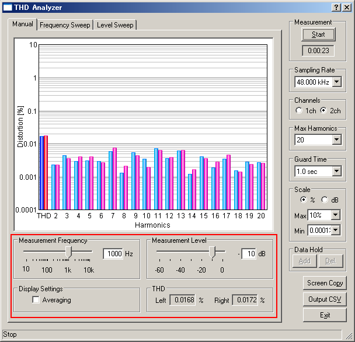

DSSF3 > RA > Reference Manual > THD Analyzer

| Item | Description |
|---|---|
| Measurement Frequency | This item sets the frequency to be measured. Move the slider or enter the value. |
| Measurement Level | This item sets the output level. The maximum level of the system is shown as 0 dB. |
| Setting | Check the Averaging box for displaying the averaged results during the measurement. |
| THD | THD (total harmonic distortion) that is currently measured is displayed. |
DSSF3 > RA > Reference Manual > THD Analyzer